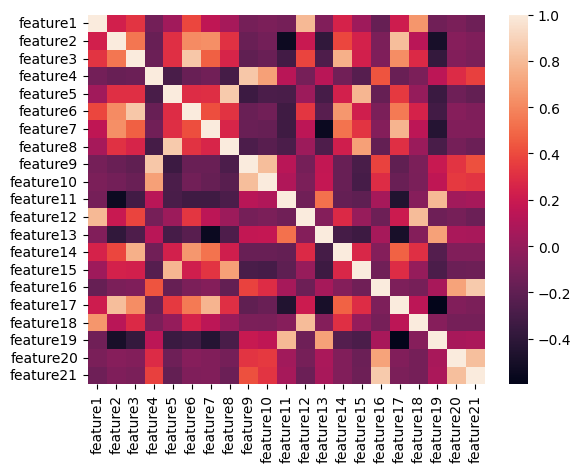
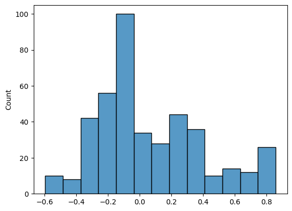
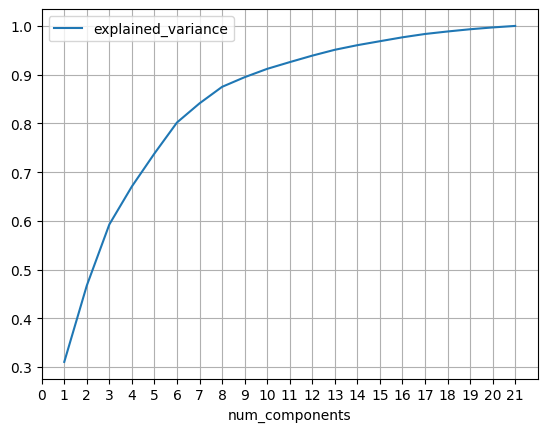
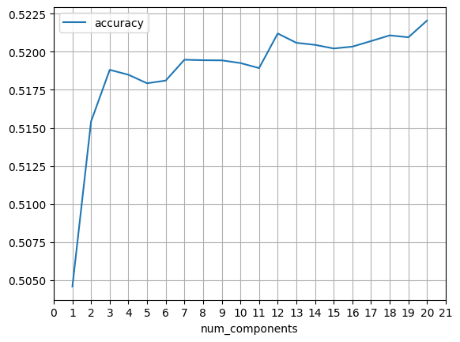

import pandas as pd
import numpy as np29 Principal Components Logistic Regression
Numerai is a hedge fund that crowdsources their market predictions. They disseminate data that is anonymized so that the data scientists who are working on the forecasting are not even aware of what features or labels they are working with. The prediction problem is reduced to a classification of predicting a gain or loss.
In this chapter we will fit principal components logistic regressions to Numerai data.
The underlying idea behind PCR is that often a small number of principal components can sufficiently explain most of the variability in the data, as well as the predictors’ relationship with the response. When utilizing PCR, we are tacitly assuming that the directions in which the predictors show the most variation are the directions that are most associated with the label. While this assumption is not guaranteed, it is reasonable enough that PCR can sometimes yield performance improvements over plain logistic regression.
29.1 Importing Data
Let’s begin by importing the data and organizing our features and labels.
df_data = pd.read_csv('../data/numerai_training_data.csv')
df_data.head().T| 0 | 1 | 2 | 3 | 4 | |
|---|---|---|---|---|---|
| feature1 | 0.499664 | 0.099515 | 0.671993 | 0.578177 | 0.474311 |
| feature2 | 0.951271 | 0.682824 | 0.383901 | 0.872357 | 0.639613 |
| feature3 | 0.127110 | 0.867939 | 0.533011 | 0.679625 | 0.563562 |
| feature4 | 0.469706 | 0.943828 | 0.690863 | 0.108961 | 0.169508 |
| feature5 | 0.188336 | 0.505526 | 0.176539 | 0.945910 | 0.456858 |
| feature6 | 0.113830 | 0.886766 | 0.600196 | 0.571062 | 0.580710 |
| feature7 | 0.917618 | 0.530862 | 0.381543 | 0.891958 | 0.969811 |
| feature8 | 0.398412 | 0.531002 | 0.648849 | 0.916592 | 0.357417 |
| feature9 | 0.418910 | 0.980002 | 0.831643 | 0.141508 | 0.157594 |
| feature10 | 0.452983 | 0.941859 | 0.861746 | 0.258504 | 0.251147 |
| feature11 | 0.167463 | 0.311850 | 0.712546 | 0.108918 | 0.344988 |
| feature12 | 0.430536 | 0.133233 | 0.406130 | 0.477112 | 0.289470 |
| feature13 | 0.137192 | 0.642640 | 0.520068 | 0.037959 | 0.038095 |
| feature14 | 0.201437 | 0.533367 | 0.660924 | 0.604539 | 0.770200 |
| feature15 | 0.507708 | 0.616879 | 0.538882 | 0.974103 | 0.697395 |
| feature16 | 0.919475 | 0.697038 | 0.160117 | 0.187519 | 0.792327 |
| feature17 | 0.978169 | 0.741461 | 0.765317 | 0.938254 | 0.711650 |
| feature18 | 0.177080 | 0.086690 | 0.301772 | 0.560129 | 0.177080 |
| feature19 | 0.101372 | 0.109533 | 0.352097 | 0.136483 | 0.247403 |
| feature20 | 0.722138 | 0.324666 | 0.638205 | 0.284507 | 0.666598 |
| feature21 | 0.832319 | 0.552276 | 0.383552 | 0.199446 | 0.755557 |
| target | 0.000000 | 1.000000 | 0.000000 | 1.000000 | 0.000000 |
df_X = df_data.drop(columns='target').copy()
df_y = df_data['target'].copy()29.2 The Data is Clean
One nice thing about working with the Numerai data is that it is clean and normalized:
- All the features are in the range of \([0, 1]\).
- All the features have a mean of 0.50 and a standard deviation of 0.28.
- The occurrence of labels is balanced at 50% gains and 50% losses.
df_X.mean()feature1 0.511372
feature2 0.492770
feature3 0.492105
feature4 0.499420
feature5 0.502291
feature6 0.493039
feature7 0.480280
feature8 0.494526
feature9 0.492926
feature10 0.489265
feature11 0.495725
feature12 0.510969
feature13 0.489852
feature14 0.509350
feature15 0.487469
feature16 0.509012
feature17 0.488944
feature18 0.484929
feature19 0.491757
feature20 0.509223
feature21 0.498371
dtype: float64df_X.std()feature1 0.282260
feature2 0.287446
feature3 0.282481
feature4 0.284493
feature5 0.289867
feature6 0.287061
feature7 0.287526
feature8 0.288087
feature9 0.293945
feature10 0.287046
feature11 0.290922
feature12 0.285451
feature13 0.291276
feature14 0.290140
feature15 0.286997
feature16 0.289279
feature17 0.284790
feature18 0.290445
feature19 0.283742
feature20 0.291001
feature21 0.289637
dtype: float64Notice that a guess of increase for all assets would yield an accuracy of 50.5%.
df_y.mean()0.505170265780730929.3 Analyzing Correlations
PCA regression tends to work best when there are a large number of features, and many of the features are highly correlated (i.e. lots of multi-colinearity). So let’s analyze the correlation structure of our features. We begin by using the DataFrame.corr() method in pandas and then applying a heat-map with the seaborn package.
import seaborn as sns
sns.heatmap(df_X.corr());
I find the heat-map a little hard to read, so let’s try a different approach. In particular, we’ll create a histogram of all the correlations.
I begin by creating a the correlation matrix using numpy and then I fill the diagonal with np.nans because I only want to focus on the pairwise correlations (why??).
corr = np.corrcoef(df_X, rowvar=False) # calculating correlation matrix
np.fill_diagonal(corr, np.nan) # filling the diagonal with nans
sns.histplot(corr.flatten(), legend=False); # plotting histogram 
As we can see, all our correlations are in the range of -60% to +85% and there aren’t that many on the high range - most are in the range of -40% to +40%. So I wouldn’t suspect that PCA regression is going to help performance that much.
29.4 Principal Components
Let’s now turn our attention to actually calculating the loading vectors (.components_) and the scores of the principal components. We begin by importing the constructor function PCA() and instantiating a model object which we will call pca.
from sklearn.decomposition import PCA
pca = PCA()Running the pca.fit_transform() method of our model does two things: 1. Fits the PCA which calculates the loading vectors and the component scores. 2. Returns an array that contains the component scores.
pc_scores = pca.fit_transform(df_X)
pd.DataFrame(pc_scores).head(10).T| 0 | 1 | 2 | 3 | 4 | 5 | 6 | 7 | 8 | 9 | |
|---|---|---|---|---|---|---|---|---|---|---|
| 0 | 0.108582 | 0.047151 | -0.090215 | 1.353407 | 0.543936 | -1.337931 | -1.065158 | -0.897421 | -0.009373 | -0.126169 |
| 1 | -0.574424 | -0.716723 | -0.211012 | 0.273582 | -0.291230 | -0.512642 | -0.327780 | -0.489651 | -0.315189 | -0.422283 |
| 2 | 0.537864 | 0.494604 | -0.096291 | 0.451725 | 0.491375 | -0.065085 | -0.547790 | 0.823222 | -0.750135 | -0.353828 |
| 3 | 0.498702 | 0.406678 | 0.226609 | 0.129886 | 0.045200 | -0.113888 | -0.041263 | -0.300901 | -0.038114 | -0.574432 |
| 4 | -0.587933 | 0.489419 | 0.412921 | 0.066838 | -0.686664 | 0.213407 | -0.238949 | 0.207119 | -0.039683 | 0.336750 |
| 5 | 0.456096 | -0.508008 | -0.250760 | 0.185151 | -0.092568 | 0.031041 | 0.643533 | 0.040054 | -0.214722 | 0.228547 |
| 6 | 0.279154 | -0.373310 | -0.040299 | 0.118741 | 0.321192 | -0.059057 | -0.296018 | 0.175180 | -0.067271 | 0.003632 |
| 7 | 0.546058 | -0.117602 | -0.015733 | 0.150985 | -0.087823 | 0.108120 | 0.124292 | -0.246969 | -0.200124 | 0.058870 |
| 8 | 0.082506 | 0.295906 | -0.389367 | -0.077537 | -0.096548 | 0.052603 | 0.090922 | -0.152764 | -0.127075 | -0.094810 |
| 9 | -0.132753 | -0.058394 | -0.161979 | 0.054263 | -0.186621 | 0.073997 | 0.006181 | -0.038866 | -0.227574 | -0.058603 |
| 10 | 0.020061 | 0.114448 | 0.208979 | 0.008523 | -0.003582 | 0.036240 | -0.057146 | -0.239290 | -0.062074 | -0.006718 |
| 11 | -0.124765 | 0.108493 | -0.050232 | -0.048477 | -0.192685 | 0.196224 | -0.006818 | -0.047599 | -0.033631 | 0.055577 |
| 12 | -0.061971 | 0.066483 | 0.032047 | 0.079159 | -0.038498 | -0.239024 | -0.000349 | 0.158037 | 0.056380 | -0.020836 |
| 13 | 0.155951 | 0.183960 | -0.075008 | 0.042270 | 0.186666 | 0.083251 | 0.130578 | 0.035460 | -0.113674 | 0.079207 |
| 14 | 0.094436 | 0.015976 | 0.352847 | 0.000650 | -0.058494 | 0.106945 | -0.081955 | -0.043160 | 0.039765 | -0.097706 |
| 15 | -0.029417 | 0.205648 | 0.200973 | 0.012170 | -0.003544 | -0.006003 | -0.208144 | -0.020886 | 0.116896 | -0.113330 |
| 16 | -0.142508 | 0.097671 | -0.014369 | 0.027975 | 0.029881 | 0.169603 | -0.022507 | -0.093937 | -0.100857 | 0.129521 |
| 17 | 0.163273 | 0.092256 | 0.297362 | -0.023787 | -0.001466 | -0.138810 | -0.126334 | 0.051337 | -0.110244 | -0.009919 |
| 18 | 0.017856 | -0.085099 | 0.085173 | 0.122379 | -0.019062 | 0.035983 | -0.016196 | 0.112267 | 0.080343 | 0.126598 |
| 19 | 0.059728 | 0.002044 | 0.077430 | -0.020641 | 0.004201 | -0.007187 | 0.131228 | 0.003170 | 0.002344 | -0.008848 |
| 20 | -0.032296 | -0.069026 | 0.010650 | -0.042135 | 0.002415 | -0.002586 | -0.026838 | -0.093424 | 0.090696 | -0.026539 |
Now that our pca object is fit, we can examine how much variance is explained by each component. As you can see, 31% of the variance is explained by the first component.
pca.explained_variance_ratio_array([0.31066213, 0.15675227, 0.12543453, 0.07790119, 0.06755613,
0.06360026, 0.03925333, 0.03386603, 0.01977618, 0.01712178,
0.01380059, 0.01331539, 0.01199815, 0.00946309, 0.00812939,
0.00801006, 0.00682141, 0.00512116, 0.00459589, 0.00373127,
0.00308978])It’s a little more enlightening to consider how much variance is explained by the first \(n\) components cumulatively. We can visualize this easily with the following code.
pd.DataFrame({
'num_components': range(1, 22),
'explained_variance':pca.explained_variance_ratio_.cumsum(),
}).plot(x='num_components', y='explained_variance', grid=True, xticks=range(22));
Notice that the first 9 (out of 21) components account for 90% of the variability in the features.
29.5 Fitting Logistic Regressions with Increasing Numbers of Components
Finally, we’ll fit logistic regressions with increasing numbers of principal components and analyze how the performance of the model changes. We’ll use 10-fold cross-validation accuracy as our performance metric.
Let’s begin by importing the functions that we need from sklearn and instantiating our model object that we will call log_reg.
from sklearn.linear_model import LogisticRegression
from sklearn.model_selection import cross_val_score
log_reg = LogisticRegression()The following for-loop iterates through the scores of the principal components and fits a logistic regression to cumulative subsets of them. The first iteration uses the first principal component. The second iteration uses the first two principal components. The last iteration uses all the principal components.
# creating lists to hold results
components_used = []
accuracy = []
# performing 10-fold cross validation on and increasing number of principal components
for ix_component in range(1, 21):
# 10-fold cross-validation
cv_scores = cross_val_score(estimator=log_reg,
X=pc_scores[:, 0:ix_component],
y=df_y,
cv=10,
scoring="accuracy")
# calculating average accuracy
cv_accuracy = cv_scores.mean()
# appending to results list
components_used.append(ix_component)
accuracy.append(cv_accuracy)Let’s visualize how our logistic regressions perform as we successively add principal components. Using all principal components has the highest accuracy, but using about 12 seems to preform relatively well.
pd.DataFrame({
'num_components':components_used,
'accuracy':accuracy,
}).plot(x='num_components', y='accuracy', grid=True, xticks=range(22));
29.6 References
https://ethanwicker.com/2021-03-14-principal-components-regression-001/